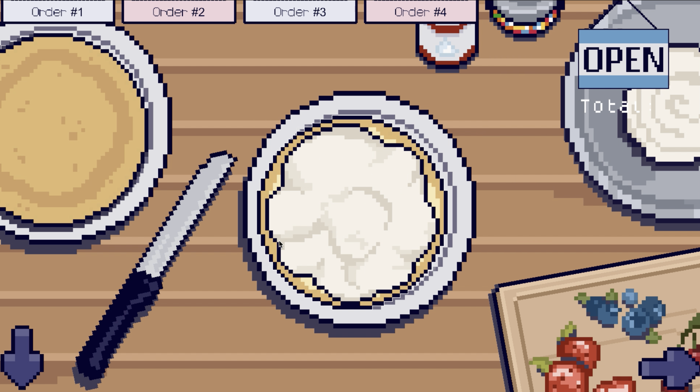
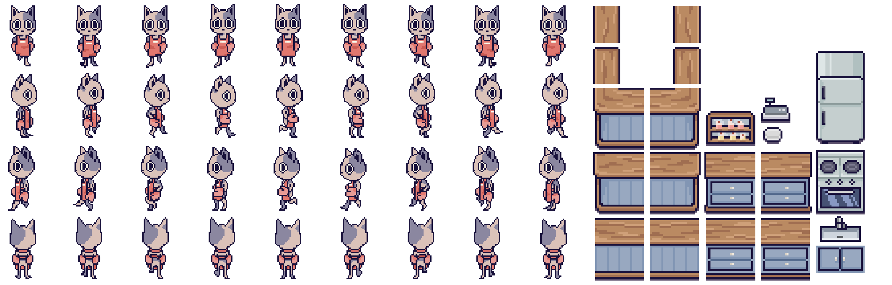
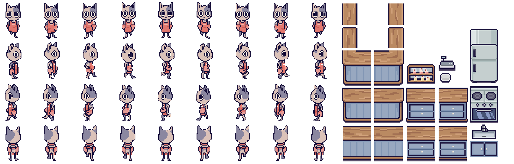
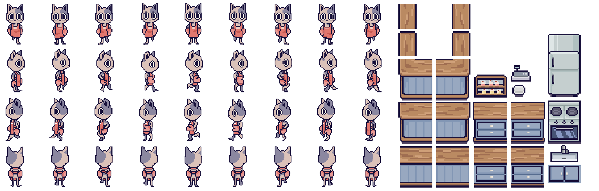

BAKERY GAME
Unity, C#
A small bakery management game developed in Unity and C#, focused on serving customers and taking orders. Although incomplete, I’ve been using this project to explore how visuals and game systems work together to create a particular mood, building on what I learned from Finn’s World. This project has been more complex, involving NPC interactions, customer queue logic and more advanced player interactions.

 

